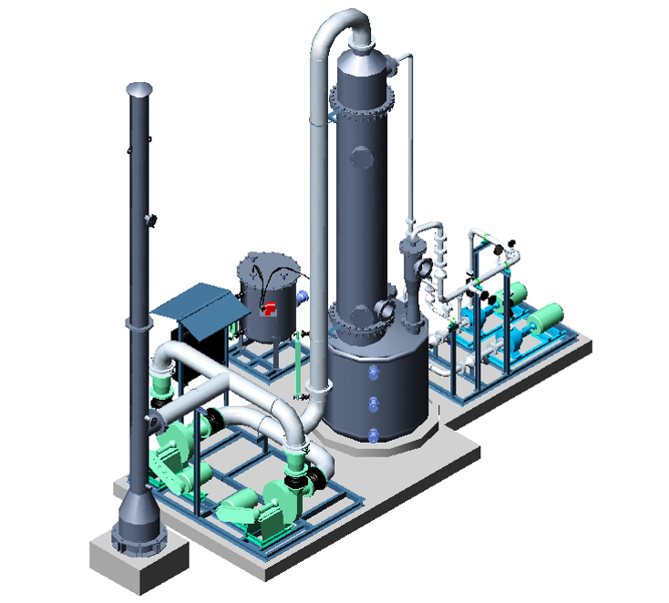

PRODUCTS
SCRUBBING SYSTEMS

Trans Tech Projects Pvt. Ltd. offers Venturi and Packed Tower Absorbers for removal of gaseous pollutants such as Cl2, ClO2, HCl, SO2, NH3, NOx, H2S, mercaptans, amines. The system can be either combination of venturi and packed tower or can be individual absorbers.
In venturi scrubber, the gaseous stream gets sucked using venturi from the source where it comes in contact with scrubbing liquid. Any particulate matters gets removed at this stage. A high pressure pump is required to generate the suction for the gaseous stream.
In packed tower, the gaseous stream flows upward through a packed bed while the scrubbing liquid flows downward by gravity over the packing. Packed bed consists of random or high performance packing which provides a close gas-liquid contact.
The internal components of the tower consist of a packing support plate, a packed bed, a liquid distributor and a mist eliminator. Packed tower absorbers operate at relatively low pressure drops and handle high circulation rates of scrubbing liquid. The tower can be designed for once through operation or to recycle the liquid, depending on the process requirement.
Venturi & P acked tower absorbers are available in alloy steel, PP / FRP and rubber lined mild steel. The tower internals can be made from polypropylene or any other materials including metals depending on the process conditions.
A team of expert chemical engineers is available for process design, detail engineering, installation & commissioning
COLUMN INTERNALS

The performance of packed columns that use modern high efficiency packing is closely related to the performance of the column internals such as liquid distributors, collectors, support plates & mist eliminators
TransTech offers a series of column internals to be used with random and structured packing. These internals are specifically designed and selected to maximise the performance of the packing and can be effectively used in various combinations.
Column internals are available in metal, thermoplastic & teflon for applications in corrosive, hot and pressurised systems found in chemical, hydrocarbon processing and gas-liquid absorption units.
TransTech also supply various random packing suitable for your application. Backed up by experienced chemical engineers, we provide total solutions for new systems or modification of existing systems for efficient operation.
CONTROL PANELS

Trans Tech has qualified electrical and control engineers having several years of experience in the design and development of electrical control panels.
A typical project design would involve the development of :
- Fully Detailed Panel Layouts & general assembly
- Wiring Schematics
- Bill of Materials
- Full Safety Schematics
- PLC I/O Schematics
- Termination & I/O Schedules
Motor Control Center
Trans Tech offers design and development of Motor Control Centers in integration with Control Automation System. The electrical design are based on Fully Type Tested Assemblies upto Form IV Type 7. Going one step ahead the intelligent / SMART function allow Single plant control & data gathering at the plant central system. The switch gear products / components used are high quality multi-vendor products. The MCC is pre tested and pre configured at the factory as per relevant international standards